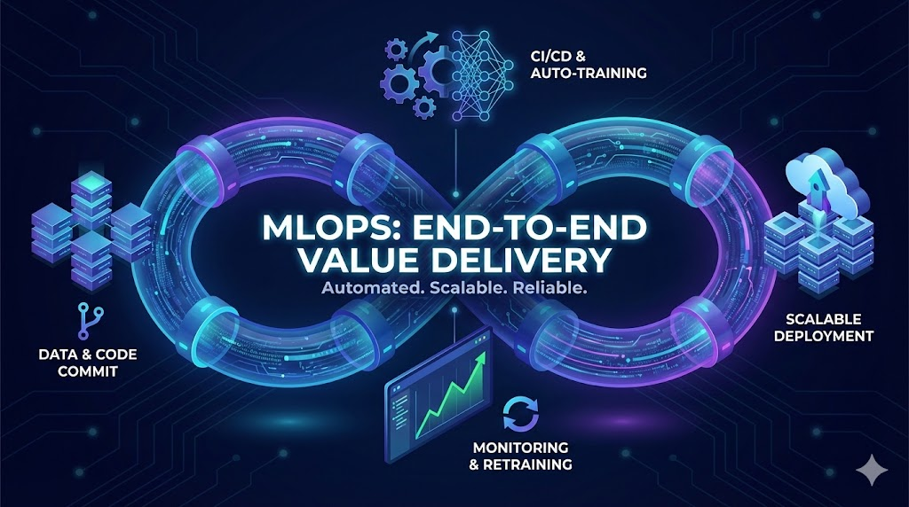

PROYECTOS DEL PORTAFOLIO
Entrenamiento de CNN con Keras desde Cero
Guía completa sobre la construcción de redes neuronales convolucionales desde cero usando Keras y TensorFlow. Demuestra implementación práctica de arquitecturas CNN para clasificación de imágenes con explicaciones detalladas y ejemplos interactivos.
Ver más →
Simulando AWS SageMaker Inference con LocalStack
Guía práctica para simular endpoints de inferencia de AWS SageMaker localmente usando LocalStack. Demuestra cómo probar y desarrollar pipelines de inferencia ML sin incurrir en costos de AWS, con configuración containerizada e integración CI/CD.
Ver más →
Proyecto de Hackathon de Microsoft: Connect+ - Plataforma para potenciar el networking de mujeres en tecnología usando Azure
Plataforma full‑stack basada en microservicios para promover la inclusión de mujeres en tecnología, con arquitectura escalable, pipelines reproducibles, comunicación eficiente entre servicios y despliegue containerizado.
Ver más →BLOG
Cómo hice fine-tuning de modelos CNN con Keras Functional API (demo disponible)
Guía para aplicar transfer learning, personalizar arquitecturas CNN y desplegar modelos con experiment tracking y monitoreo.
Leer artículo →Regresión logística sin caja negra: un caso GLM desde la estadística hasta la optimización (con demo)
Análisis end-to-end de la regresión logística como un caso particular de un GLM, derivando la función de pérdida desde la PMF de Bernoulli y mostrando cómo se entrena mediante métodos de optimización, con una demo comparativa incluida.
Leer artículo →EXPERIENCIA Y EDUCACIÓN
Experiencia
- Credicorp Capital (2026 – Actualmente) – Cloud & MLOps Engineer – Lima, Peru
- Cirion Technologies (2023 – 2026) – Cloud Architect – Lima, Peru
- Lumen (2019 – 2022) – Cloud Engineer – Lima, Peru
- Seidor (2018 – 2019) – On-Premises Specialist – Lima, Peru
Educación
- MSc Statistical Engineering, Engineering National University, Peru – En curso
- MSc Data Science, University of Bath, Inglaterra – 2025
- Diploma: Python for Data Science, VIU, España – 2023
- BSc Network and Communications Engineering, UPC, Perú – 2022
- Technician: Data & Network Communications, TECSUP, Perú – 2014